myAster: Telling patients what their insurance allows before they book, not after
myAster is Aster’s patient app in the UAE. With one account, patients book doctors, order medicines, buy health packages and see their records. Many of them pay with insurance.
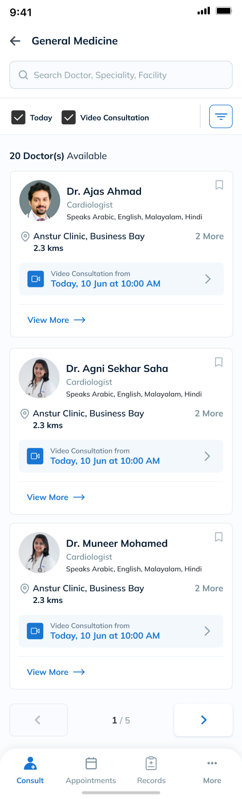
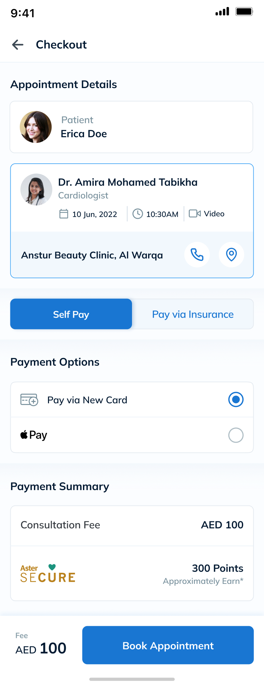
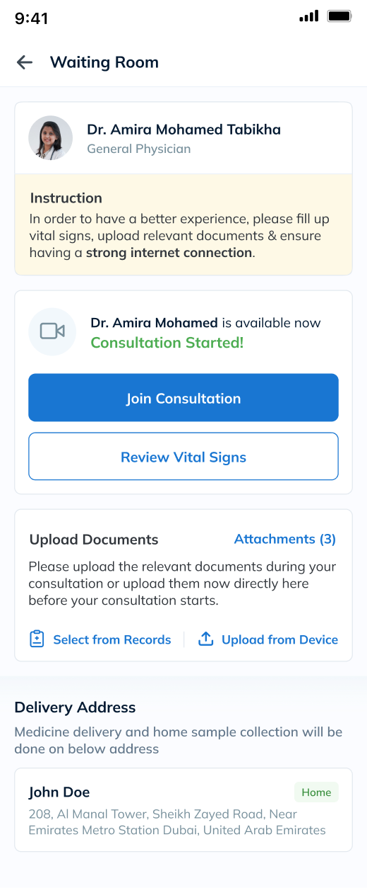
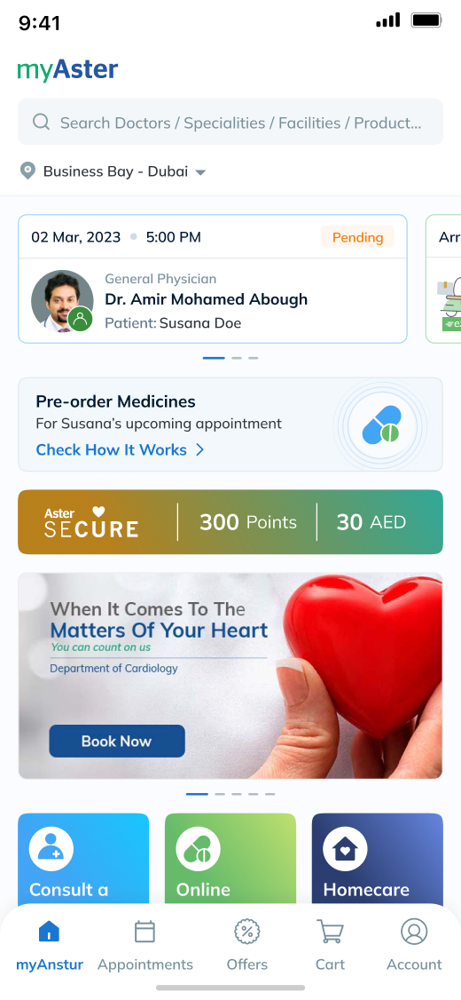
01 · My contribution
I led four designers, and started with what they’d all share
Four designers were about to work on six services at the same time. My job was to keep them all following the same rules. So before anyone started a service, I designed the parts they’d all share. Every week I ran a review where we checked new screens against those rules. When someone hit a case the rules didn’t cover, we fixed the rule first, then the screen.
Who owned what
I designed
The shared layer every service uses: who the booking is for, family profiles, insurance states, and checkout.
I led
The other three designers. I assigned the service flows, reviewed every screen against the shared patterns, and approved what went to engineering. I also led the scope discussions with Aster’s teams.
The team owned
What I worked with, but didn’t own.
Aster’s engineers
The build of all six services
Aster’s Teleconsult, Insurance and Registration teams
The booking rules, where each one is checked (a joint decision), and the four-hour line
Insurers, the hospital system and the call center
Outside the app, and outside my control
How the project ran
Scope
Discussions with the Teleconsult, Insurance and Registration teams
Audit
Every approved state, screen by screen
Shared layer
Identity, family profiles, insurance states and checkout, designed first
Six services
Built on the shared layer by a team of four
Handoff and QA
297 screens and 161 components, with the build checked against them
02 · The problem
Patients picked a doctor and a time, and only then found out they couldn’t book
A lot of patients book with insurance. But the app only checked the hospital’s rules after they’d already chosen a doctor and a time. Some of those checks were dead ends, and the only way forward was a phone call.
Patients booking for themselves or family, many paying with insurance.
Rules about the policy, Emirates ID, profile and referrals only showed up after a time was picked. The price only showed up after booking.
Many blocked bookings ended in “Please contact our call center.” Unverified policies risked rejected claims.
Show the hospital’s rules while the patient can still change their mind.
Specialty, language, the next free slot.
Checked hereNothing checked yetThe slot is held for 10 minutes while the patient pays.
Checked hereNothing checked yetPatient, payment method, then Book.
Checked hereNew policy still being verifiedEmirates ID has expiredProfile blocked or under reviewSpecialty needs a GP visit firstBooked, but the price isn’t known yet.
Checked hereFee created only after the insurer repliesNothing was checked while the patient was still choosing. By the time a rule showed up, the doctor and time were already set, and some rules left only one option: call.
03 · Audit and insights
Each screen worked. The order didn’t.
I had no usability sessions or analytics to work from. So I started with what I could check: every approved screen, and the people who owned the rules. That’s when it clicked. The rules were split across three teams, and nobody could see the whole booking.
Who I worked with, and how
Teleconsult team
GP hours, and which specialties need a GP first
Insurance team
Policy rules, and when a new policy is verified
Registration team
When a profile goes into review or gets blocked
Scope discussions
With all three teams
State audit
Every approved state, screen by screen
Not available
Usability sessions, analytics, call-center logs
So the insights below come from the audit and those conversations, not from watching patients.
What patients actually saw
I went through the approved screens as a patient would. The red outline marks the message each one shows.
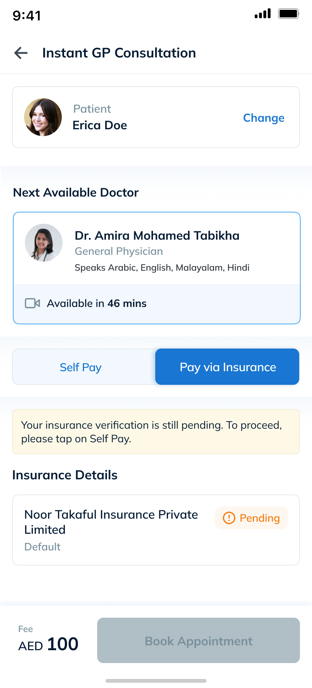
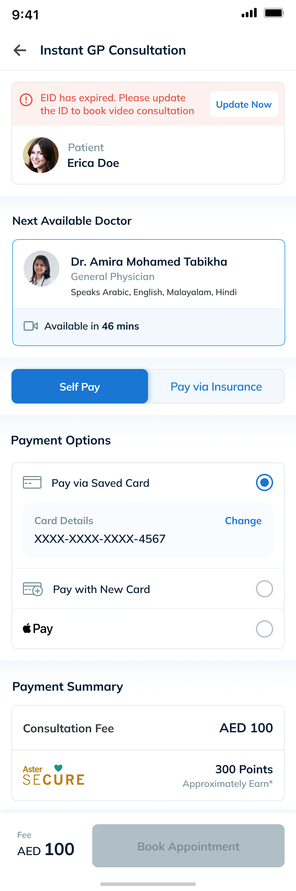
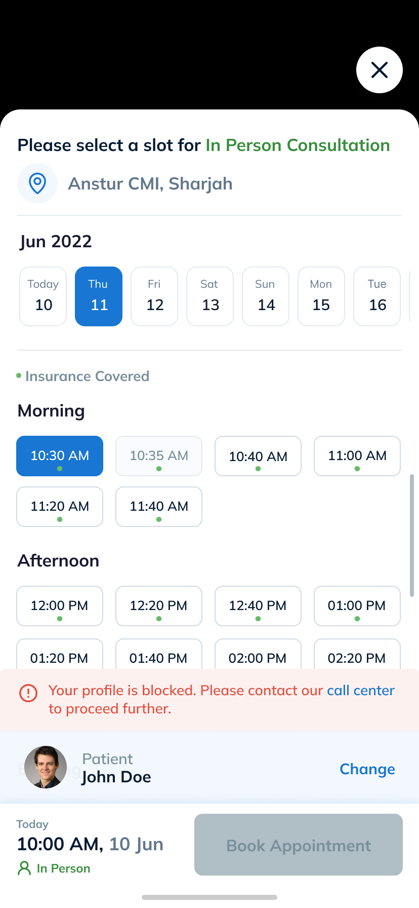
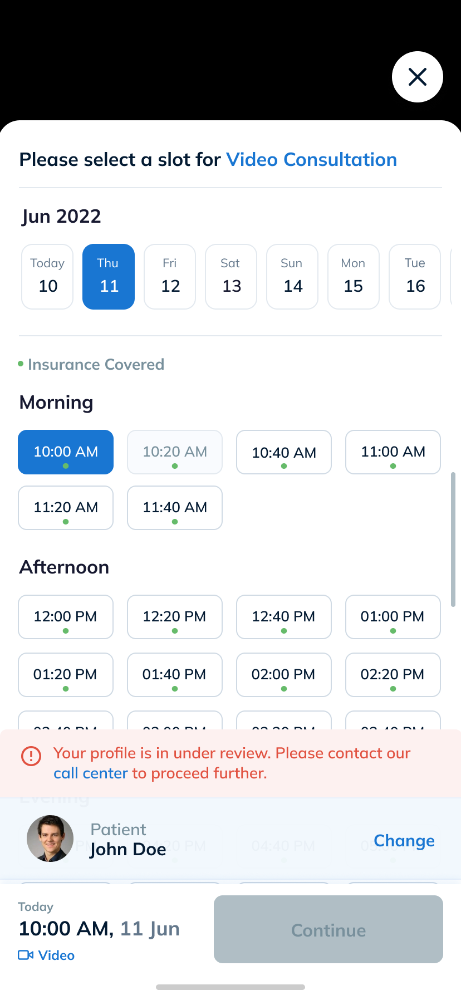
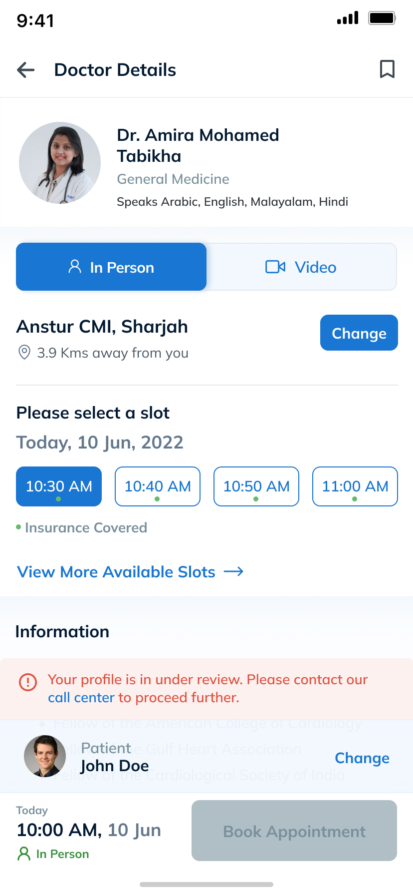
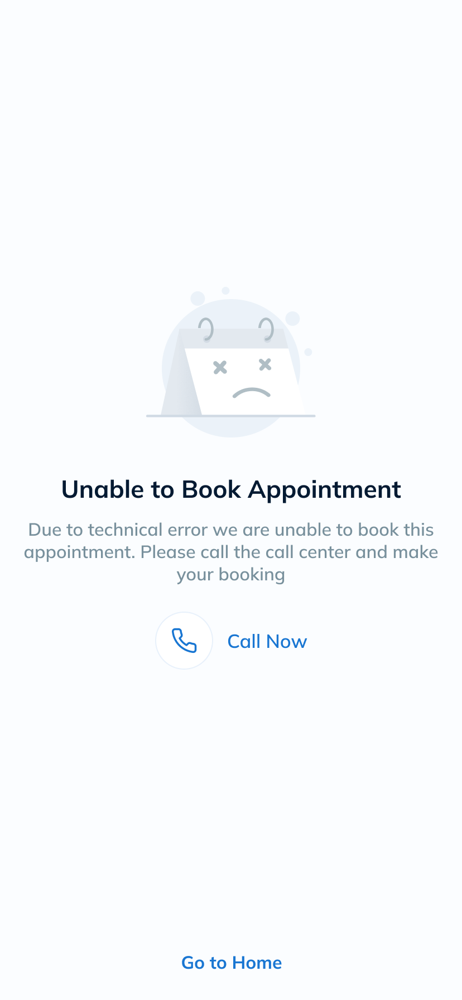
Five rules reached patients at checkout, or even after booking.
Audit of approved statesPatients committed before the app knew whether they could book.
Check each rule at the point where it can still change the choice.
Decision 1Many states ended in “Please contact our call center.”
Same auditThe app treated problems patients could fix the same as ones only staff could fix.
Route each blocker by who can fix it.
Decision 2The hospital system creates the fee only after the insurer replies.
Constraint from the scope discussionsThe price can’t be a condition for booking. It has to show up as a status.
Show Under Process, then send the fee as a notification.
Decision 4Six services needed the same identity, insurance and checkout.
Project scopeIf each flow designed its own rules, they’d drift apart.
Design checkout once, and let each service add to it.
Decision 304 · Design direction
Check things while the patient can still choose
The audit made one thing clear. No single screen was broken. The problem was when each rule showed up. So I started every decision with one question: what’s the earliest point this check can still change what the patient picks?
The principle
Check each rule at the first moment it can still change the patient’s choice.
What booking looks like now
Find a doctor
Age, gender and GP-first rules filter the list
Pick a time
The slot is held for 10 minutes while the patient pays
Check out
ID, coverage and the four-hour rule are checked before Book
After booking
The fee arrives as a notification, with one tap to pay
05 · Decision 1 of 4 · Insurance status
Four insurance states, each with a next step
An insurer can take hours to verify a new policy, and Aster can’t speed that up. The insurance team’s first instinct was to block every pending policy. I walked them through what that means for a patient booking a video call in the next hour, and proposed drawing the line by time until the visit instead. They set it at four hours, based on how long verification usually takes.
Block every pending policy · let every pending policy through · draw the line by time until the visit
More than four hours away, book now and the fee follows. Closer than that, switch to Self Pay.
One more rule patients have to understand.
Shipped. Pending bookings that end in a rejected claim aren’t measured yet.
Patient picks a time and pays with insurance
What does the insurer say about this policy?
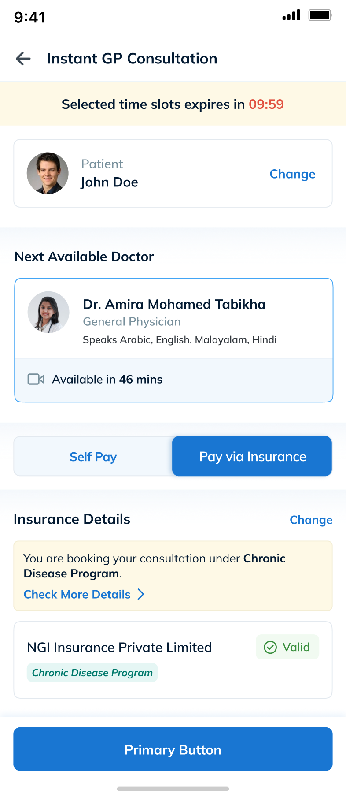
The policy covers the visit. The badge says Valid and Book works as normal.
Nothing to fix. This is the path the other three try to get back to.
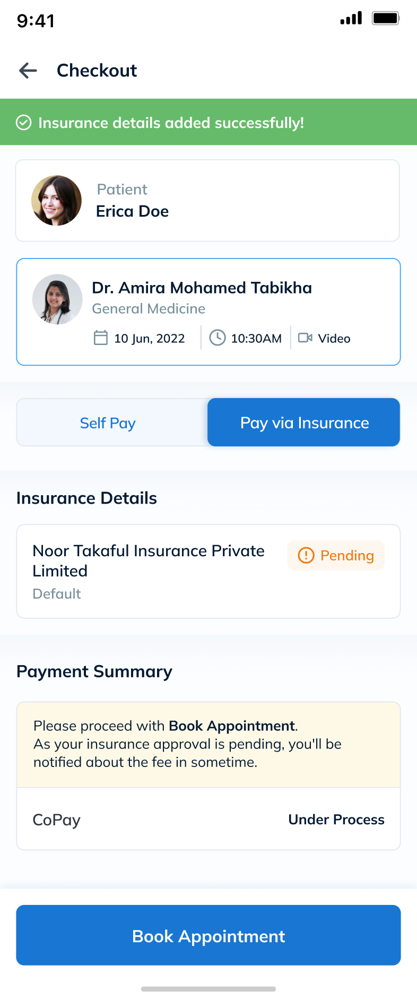
Book Appointment stays enabled. The note explains, and the copay reads Under Process. The insurer replies before the visit and the fee arrives as a notification. Decision 4 shows what happens next.
The insurer may not reply in time. The policy shows Pending, a note says to tap Self Pay, and Book waits until they do.
Tap Self Pay and keep the slot, or go back and choose a time more than four hours away.
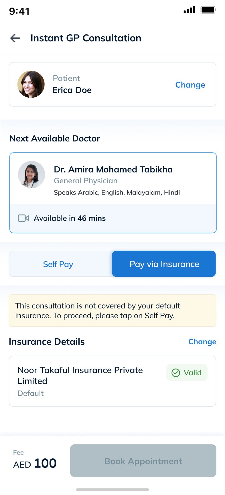
The default policy doesn’t cover this consult. A note says so, and Book waits until Self Pay is picked.
Tap Self Pay, or tap Change to use another linked policy.
These are the four insurance states from the approved file. Every one ends with something the patient can do.
05 · Decision 2 of 4 · Blockers
Sending each problem to whoever can fix it
An expired ID, a blocked profile and a server failure all ended the booking the same way. But they’re very different problems. One generic error would send a patient to the phone over an ID they could update in a minute.
One error, one phone number · a retry or appeal on every blocker · route by who can fix it
If the patient can fix it, give them a button. If only staff can, name the call center. If the app failed, offer a call.
Three patterns instead of one, so more states to design and QA.
Shipped. Call-center contacts per booking aren’t measured yet.
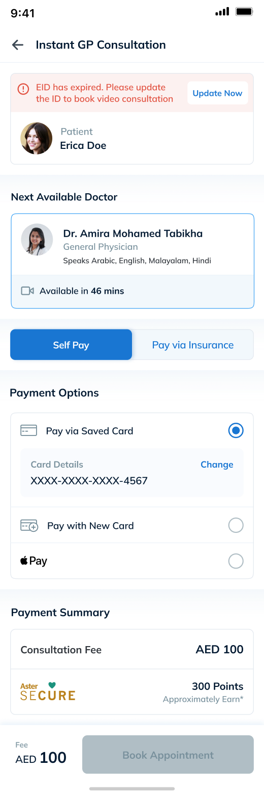
Update Now sits in the banner. After the update, the patient comes back to the same booking.
No button. A blocked profile needs someone with hospital records, so the screen names the call center instead.
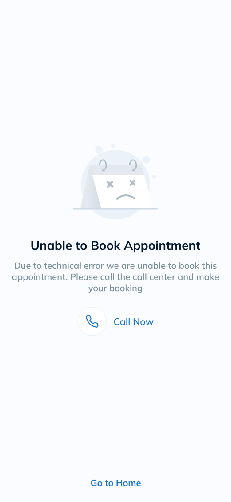
Call Now, or go home. No retry button that fails the same way twice.
05 · Decision 3 of 4 · Checkout
One checkout for every service
Consults came first, and five more services were right behind. Each needed to know who the booking was for, how they’d pay, and what happens if insurance says no. If every designer solved that alone, the rules would drift apart. So I designed checkout first, and every service built on it. The developers wanted to finish consults first and generalize later. I showed them what retrofitting five services would cost, and we agreed to build the shared checkout first.
Each service designs its own checkout · one identical checkout · a shared core that services add to
The patient, payment switch and payment list stay fixed. A service can add an option, but not replace the pattern.
Checkout had to be designed before any service flow could finish.
Six services shipped on one checkout pattern.
Six services, each with its own flow
One shared layer, designed first
Outside the app, and outside my control
Not every service uses every part. Records doesn’t need checkout, and the package checkout has no insurance step. But no service builds its own version.
Video consult checkout
One account books for parents and children too, so every checkout opens by naming the patient. Booking for the wrong profile is the mistake that’s hardest to undo.
Self Pay or insurance, always in this spot. The four-hour line and the Not covered state were designed once, here, and every service picked them up.
Card and Apple Pay everywhere. Packages and clinic visits add Pay at Clinic to the same list instead of getting their own screen.
The same pattern in other services
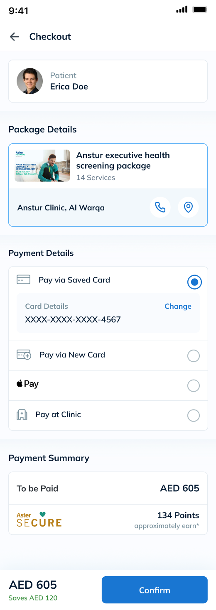
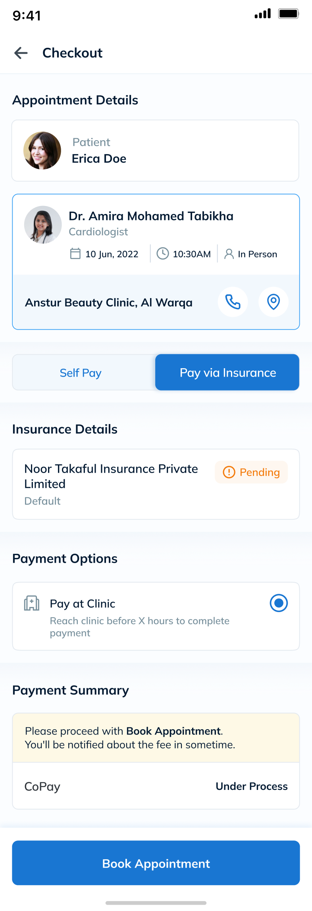
One status language, wherever it appears
Every status uses the same parts: a tint, an icon, a plain word, and an action when there’s one to take. Learn it once on an insurance card, and you can read it anywhere in the app.
Covered: green tint, a check, the word Valid.
Not covered: a note that names the next step, tap Self Pay.
A blocker: a red banner with the fix inside it, Update Now.
05 · Decision 4 of 4 · Price
When there’s no price to show at checkout
The hospital system only creates the fee after the insurer replies, so at checkout there’s no price to show. Rather than block the booking, checkout says Under Process and notifications do the rest. Patients still book without knowing the amount. Honestly, that’s the part I’m least happy with.
Make the price a condition for booking · book now, and let the fee arrive as a state
Show Under Process at checkout, then send the fee, a reminder, and a cancellation if it stays unpaid.
Patients still commit without knowing the amount.
Shipped. Bookings canceled for an unpaid fee aren’t measured yet.
After booking
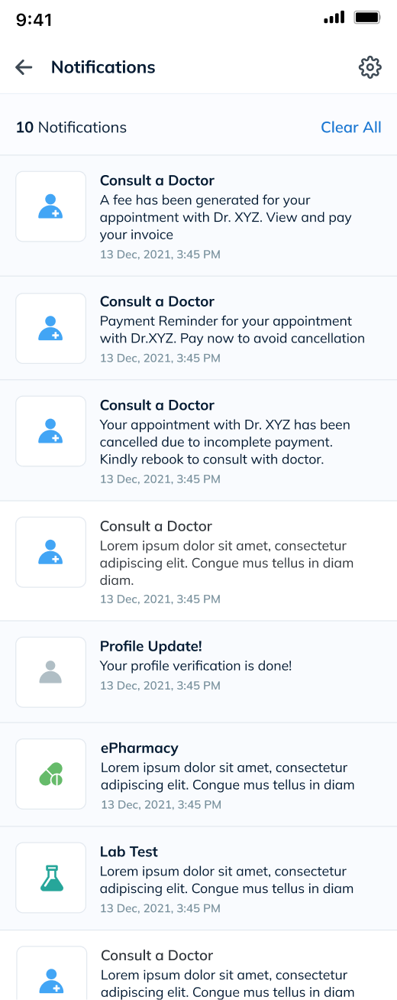
1 2 3What each moment tells the patient
A notification links straight to the invoice, so paying is one tap from the message.
A reminder says what happens next: pay now to avoid cancellation.
The booking is canceled and the patient is asked to rebook, so an unpaid booking doesn’t block another patient.
Notification copy is shown exactly as approved, including its placeholder doctor name.
06 · Validation
No usability testing, so here’s what we did check
We didn’t run usability testing on this project. Six services were shipping on one timeline, and the plan had no room for research sessions. What we did have was design reviews, build QA and a contrast check. Here’s what they caught, what’s still open, and how I’d test the rest.
Pending, more than 4 hours away
Design review: Book was disabled, and the reason sat further up the screen.
Kept Book enabled, with the note right beside it.
Shipped
27 shared buttons
Build QA: they reached handoff still labeled “Primary Button.”
Labels corrected in the build.
Fixed before release
What’s still unresolved
The orange measures 2.6:1 against its badge. The word does the work, but a darker orange (#9A4A00) would reach 5.9:1.
Not fixedCoverage text 3.4:1, Valid 4.1:1, Self Pay 4.3:1, all under 4.5:1.
Not fixedPending within 4 hours and Not covered still show their note further up the screen.
Not fixedI’d run a moderated test with 8 insured UAE residents: book with a pending policy, book for a parent, fix an expired ID, and explain what Under Process means.
Not run07 · Results and measurement limits
What shipped, and how I’d know it worked
The app launched, but I never got the post-launch data. So below I keep three things apart: what was delivered, what changed, and what I expected to happen.
297 final screens and 161 shared components, approved for build, handed off and QA’d.
Three rules now checked before Book with a next step, one moved to the doctor list, and the fee shown as a status.
Post-launch data wasn’t shared with me, so there’s no baseline yet.
What I’d measure next
08 · Reflection
Three things I took away from this project
This project taught me as much about running a team as about the screens. These are the three lessons I still use.
Four designers were about to start five more services.
I settle identity, insurance and checkout first, so every service builds on one set of rules.
Insurance still took six screens, because each passed review on its own.
I walk the whole journey as one patient before I sign anything off.
Under Process is honest, but patients still book without knowing what they’ll pay.
I’d push for checkout to show the most a patient could be charged, once the hospital system can provide it.
What’s next: insurance in three screens. Since the project, I’ve sketched a three-screen version with AI help. It’s a proposal, not shipped work.
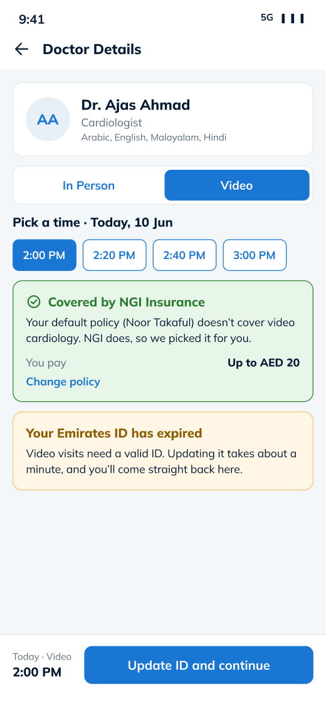
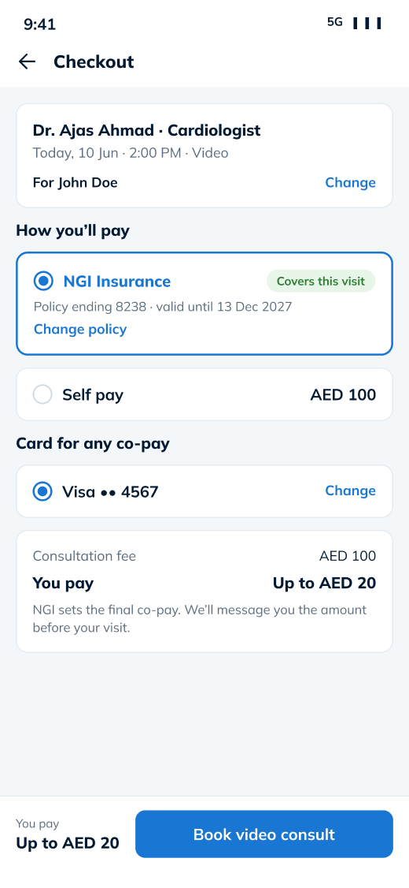
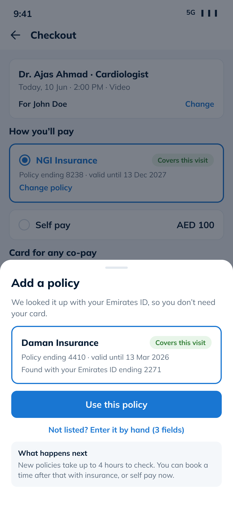
Next case study
Making daily pet diabetes tracking easier
Owners test their pet’s glucose at 7 a.m. while holding a restless animal. As the only designer, I ran in-home interviews and a 14-day diary study, then rebuilt onboarding after the first usability round showed setup stopping people before their first reading.
Pet owners can now log readings, track glucose trends, and share reports with their vet.
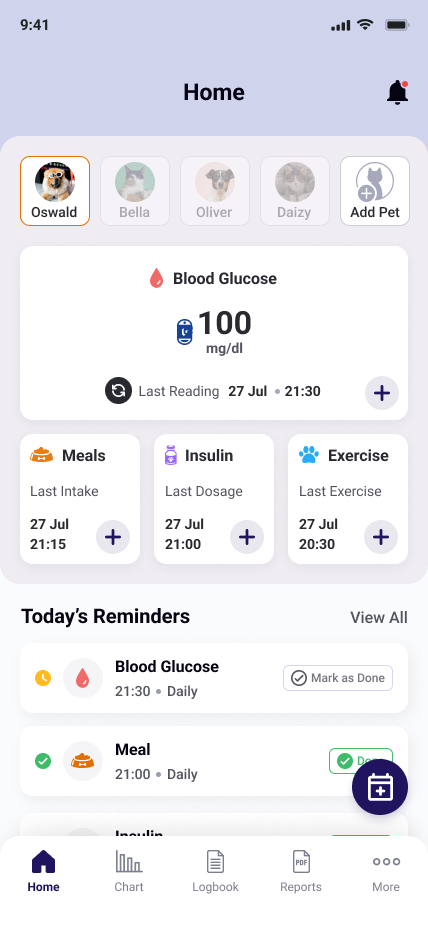
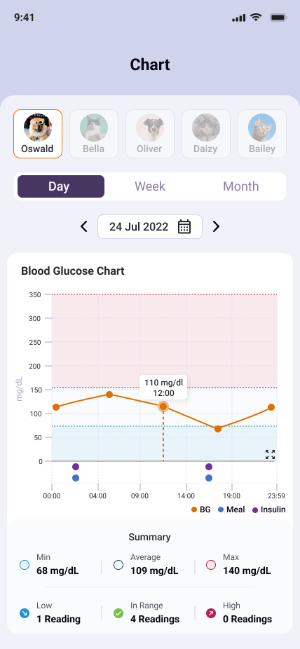
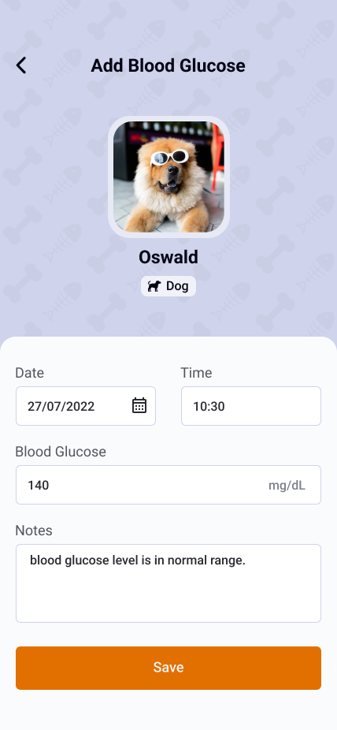